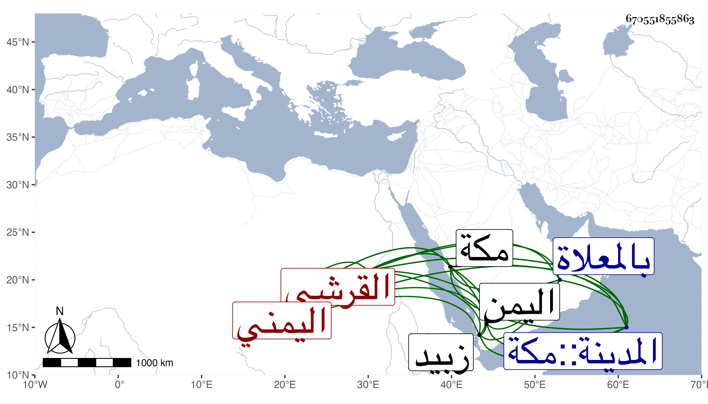

0902Sakhawi.DawLamic.ITO20230111-ara1.EIS1600.670551855863
Biography ID: 670551855863
169
أبو بكر بن عمر بن علي القرشي اليمني . ولد سنة ثمان وأربعين وسبعمائة أو التي بعدها بقرية القرشية بقرب زبيد من اليمن وكان يذكر أن القرشيين الذي هو منهم من بني أمية بن عبد شمس بن عبد مناف . قدم مكة وجاور بالحرمين ثلاثين سنة متوالية كان في غالبها بمكة وولي فيها مشيخة رباط ربيع وحمد فيه وكذا أدب الأطفال بالحرمين مدة ثم ترك قبيل موته بسنين كثيرة أدب بعدها أياما يسيرة . ذكره الفاسي وقال كنت ممن قرأ عليه القرآن وغيره وانتفعت ببركة تعليمه وكان له إلمام بمسائل كثيرة من العبادات وغيرها مع حظ وافر من العبادة والدين . توفي في سحر منتصف رمضان سنة خمس عشرة ودفن بالمعلاة وازدحم الأعيان على نعشه تبركا رحمه الله وإيانا .
